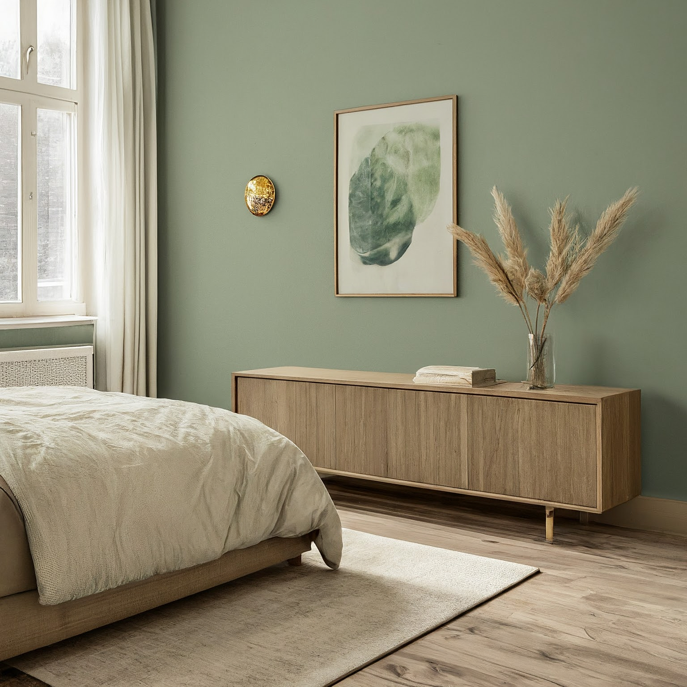
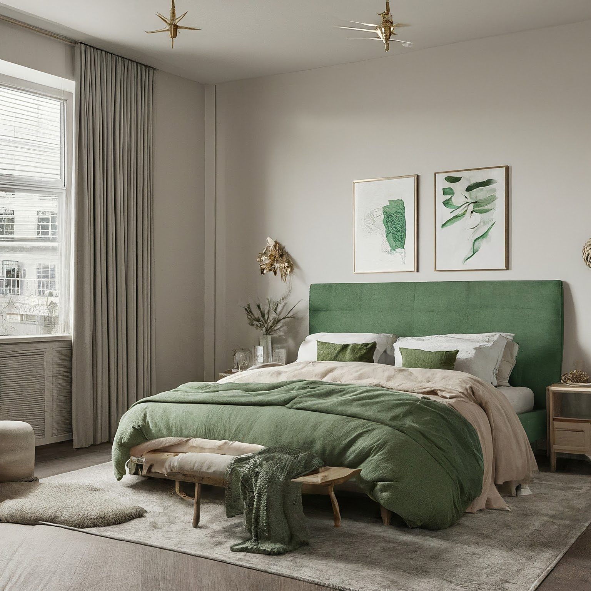
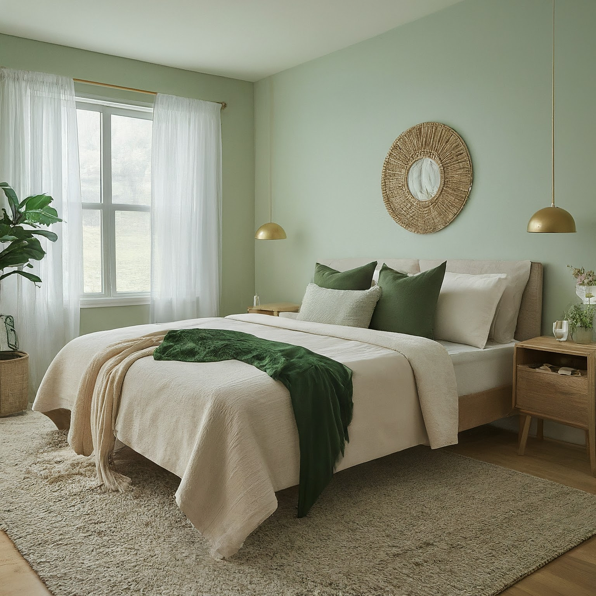

Scandinavian Bedroom Design Concept: Neutral Greens & Gold Accents

Scandinavian Bedroom Design Concept: Neutral Greens & Gold Accents
This design concept aims to create a serene and inviting Scandinavian-style bedroom, utilizing a neutral base enhanced with calming green hues and subtle gold accents for a touch of luxury. The focus will be on natural light, clean lines, functional furniture, and cozy textures.
1. Overall Concept and Style
The overall concept is centered around a minimalist and functional Scandinavian aesthetic. The bedroom will be designed to be a peaceful retreat, promoting relaxation and restful sleep. Key elements include:
- Light and Airy Atmosphere: Maximizing natural light and using light-reflecting materials.
- Emphasis on Functionality: Prioritizing practical and comfortable furniture.
- Minimalist Approach: Avoiding clutter and unnecessary ornamentation.
- Natural Elements: Incorporating wood, natural fabrics, and greenery.
- Warm and Inviting Feeling: Creating a cozy ambiance through textures and lighting.
2. Color Scheme and Materials
Color Scheme:
- Neutral Base: Primarily using shades of white (off-white, warm white), light beige, and soft greys for walls, ceilings, and larger furniture pieces. These colors will create a bright and spacious feel.
- Green Accents: Incorporating various shades of green, from muted sage green and olive green to slightly brighter emerald green, for textiles, artwork, and accessories.
- Gold Accents: Adding touches of gold (brushed gold, antique gold) through light fixtures, hardware, picture frames, and decorative objects to introduce warmth and subtle elegance.
Materials:
- Wood: Light-toned wood like birch, beech, or ash for furniture (bed frame, nightstands, dresser).
- Natural Fabrics: Linen, cotton, and wool for bedding, curtains, and upholstery.
- Metal: Brushed gold or brass for light fixtures, hardware (drawer pulls, handles), and decorative accents.
- Ceramics: For vases, planters, and other decorative items. Matte or subtly textured finishes preferred.
- Glass: Used sparingly, possibly in decorative items or a small side table. Clear or subtly frosted glass.
- Rugs: Wool or jute rugs in neutral tones or with subtle geometric patterns.
3. Furniture and Layout
Layout:
- Focal Point: The bed will be the focal point of the room, ideally placed against a wall that allows for balanced placement of nightstands and other furniture.
- Space Optimization: Maximize usable space by choosing furniture with built-in storage or multi-functional pieces.
- Traffic Flow: Ensure a clear and unobstructed path through the room.
Furniture:
- Bed: A platform bed with a light wood frame. A simple headboard, either wooden or upholstered in a neutral linen fabric, would be ideal. Consider a bed with built-in storage drawers underneath.
- Nightstands (x2): Two matching nightstands made of light wood with clean lines. Opt for nightstands with drawers or shelves for storage.
- Dresser/Chest of Drawers: A low, wide dresser made of light wood. The top can be used as a display surface for decorative objects.
- Accent Chair: A comfortable armchair upholstered in a neutral linen or green fabric. Place it near a window to create a cozy reading nook. Consider a rocking chair for added comfort and visual interest.
- Bench (optional): A simple wooden bench placed at the foot of the bed. It provides a convenient spot to sit or place items.
- Mirror: A large, rectangular mirror (ideally full-length) to enhance the sense of space and light. Consider a mirror with a thin gold frame.
4. Lighting Design
Goal: To create a layered lighting scheme that is both functional and atmospheric.
- Natural Light: Maximize natural light by using sheer curtains or blinds that allow light to filter through.
- Ambient Lighting:
- A central ceiling fixture (e.g., a simple pendant light with a linen shade) provides general illumination.
- Consider recessed lighting or track lighting to illuminate specific areas of the room.
- Task Lighting:
- Table lamps on nightstands for reading. Choose lamps with linen shades and brushed gold or brass bases.
- A floor lamp near the accent chair for reading or creating a cozy ambiance.
- Accent Lighting:
- String lights or fairy lights can be used to create a warm and inviting atmosphere.
- Picture lights to highlight artwork.
Fixture Style: Fixtures should be simple, modern, and made of natural materials like wood, metal, and linen. Gold or brass finishes will add a touch of elegance.
5. Decorative Elements
- Textiles:
- Bedding: A layered bedding arrangement with a duvet cover, throw blankets, and decorative pillows in neutral colors with green and gold accents. Consider using textured fabrics like linen, cotton, and wool.
- Curtains: Sheer linen curtains or light-filtering blinds to allow natural light to pass through.
- Rugs: A soft wool or jute rug in a neutral color or with a subtle geometric pattern to anchor the space.
- Artwork:
- Abstract art with neutral colors and green or gold accents.
- Nature-inspired prints or photographs.
- Framed botanical illustrations.
- Greenery:
- Potted plants (e.g., snake plants, fiddle leaf figs, succulents) to bring nature indoors.
- Dried flowers or branches in vases.
- Decorative Objects:
- Ceramic vases in neutral colors or with subtle patterns.
- Wooden bowls or trays.
- Candles or candle holders with gold accents.
- Books with neutral-colored covers.
- Wall Decor: Woven wall hangings can add texture and visual interest.
6. Practical Considerations
- Storage: Maximize storage space with furniture that has built-in storage (e.g., bed with drawers, dresser).
- Organization: Use baskets, boxes, and organizers to keep clutter out of sight.
- Air Quality: Prioritize good air circulation and consider an air purifier if needed.
- Soundproofing: Use soft textiles and rugs to absorb sound and create a more peaceful environment.
- Comfort: Choose comfortable bedding, pillows, and furniture that promote relaxation and restful sleep.
- Maintenance: Select materials that are easy to clean and maintain.
- Budget: Set a realistic budget and prioritize the most important elements of the design. Focus on investing in quality furniture and bedding.
This comprehensive design plan should provide a solid foundation for creating a beautiful and functional Scandinavian bedroom that incorporates a neutral, green, and gold color scheme. Remember to personalize the design to reflect your own unique style and preferences.

Scandinavian Bedroom Design Concept: Neutral Greens & Gold Accents - View 2

Scandinavian Bedroom Design Concept: Neutral Greens & Gold Accents - View 3

Scandinavian Bedroom Design Concept: Neutral Greens & Gold Accents - View 4